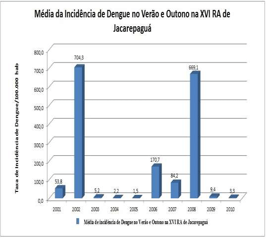

Dados Recentes
Aqui você encontra as estatísticas mais recentes sobre a dengue no município:
- Total de casos confirmados: 350
- Total de casos suspeitos: 50
- Casos graves: 10
- Óbitos: 2
Esses dados são atualizados mensalmente e fornecem um panorama da situação atual.
Gráfico de Casos ao Longo do Ano
O gráfico acima mostra a evolução dos casos de dengue ao longo do ano. É importante monitorar essas tendências para tomar medidas adequadas.